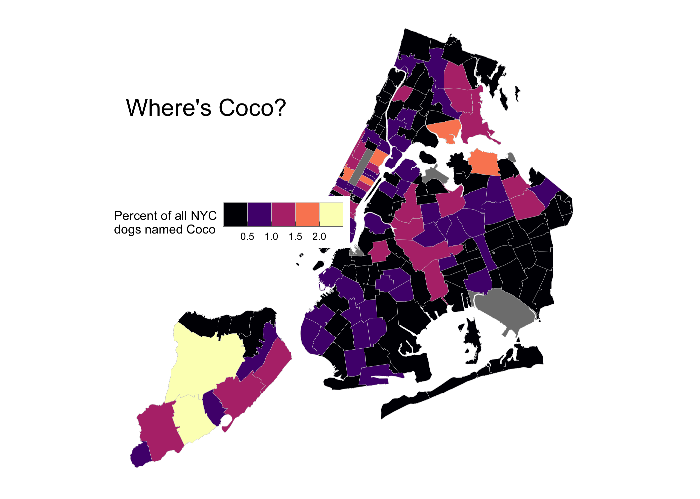

The nycdogs package contains three datasets, nyc_license, nyc_bites, and nyc_zips. They contain, respectively, data on all licensed dogs in New York city, data on reported dog bites in New York city, and geographical data for New York city at the zip code level.
Installation
nycdogs is a data package, bundling several datasets into a convenient format. The relatively large size of the data in the package means it is not suitable for hosting on CRAN, the core R package repository. There are two ways to install it.
Install direct from GitHub
You can install the beta version of nycdogs from GitHub with:
Installation using drat
While using install_github() works just fine, it would be nicer to be able to just type install.packages("nycdogs") or update.packages("nycdogs") in the ordinary way. We can do this using Dirk Eddelbuettel’s drat package. Drat provides a convenient way to make R aware of package repositories other than CRAN.
First, install drat:
Then use drat to tell R about the repository where nycdogs is hosted:
You can now install nycdogs:
To ensure that the nycdogs repository is always available, you can add the following line to your .Rprofile or .Rprofile.site file:
With that in place you’ll be able to do install.packages("nycdogs") or update.packages("nycdogs") and have everything work as you’d expect.
Note that the drat repository only contains data packages that are not on CRAN, so you will never be in danger of grabbing the wrong version of any other package.
Loading the data
The package works best with the tidyverse libraries and the simple features package for mapping.
Load the data:
To look at the tibble that contains the licensing data, do this:
nyc_license
#> # A tibble: 122,203 x 14
#> animal_name animal_gender animal_birth_mo… breed_rc borough zip_code
#> <chr> <chr> <date> <chr> <chr> <int>
#> 1 Shadow M 2000-01-01 Beagle Brookl… 11236
#> 2 Rocco M 2011-10-01 Boxer Brookl… 11210
#> 3 Luigi M 2005-09-01 Maltese Bronx 10464
#> 4 Petunia F 2013-08-01 Pug Brookl… 11221
#> 5 Romeo M 2008-10-01 Maltese Bronx 10451
#> 6 Brandy M 2004-01-01 Unknown Brookl… 11225
#> 7 Sam M 2011-05-01 Pug Manhat… 10021
#> 8 May F 2004-05-01 Unknown Staten… 10305
#> 9 Ruby F 2010-04-01 Boxer Brookl… 11220
#> 10 Leo M 2014-01-01 Beagle Bronx 10468
#> # … with 122,193 more rows, and 8 more variables:
#> # community_district <dbl>, census_tract2010 <dbl>, nta <chr>,
#> # city_council_district <dbl>, congressional_district <dbl>,
#> # state_senatorial_district <dbl>, license_issued_date <date>,
#> # license_expired_date <date>Example
You can use the nyc_zips object to create a map of, for example, the prevalence of dog names by zip code:
nyc_coco <- nyc_license %>%
group_by(zip_code, animal_name) %>%
tally() %>%
mutate(freq = n / sum(n),
pct = round(freq*100, 2)) %>%
filter(animal_name == "Coco")
nyc_coco
#> # A tibble: 170 x 5
#> # Groups: zip_code [170]
#> zip_code animal_name n freq pct
#> <int> <chr> <int> <dbl> <dbl>
#> 1 10001 Coco 9 0.00994 0.99
#> 2 10002 Coco 7 0.00617 0.62
#> 3 10003 Coco 6 0.00389 0.39
#> 4 10004 Coco 1 0.00752 0.75
#> 5 10005 Coco 1 0.00346 0.35
#> 6 10007 Coco 5 0.0243 2.43
#> 7 10009 Coco 9 0.00427 0.43
#> 8 10010 Coco 9 0.00783 0.78
#> 9 10011 Coco 12 0.00537 0.54
#> 10 10012 Coco 2 0.00234 0.23
#> # … with 160 more rows
coco_map <- left_join(nyc_zips, nyc_coco)
#> Joining, by = "zip_code"
## Map theme
theme_nymap <- function(base_size=9, base_family="") {
require(grid)
theme_bw(base_size=base_size, base_family=base_family) %+replace%
theme(axis.line=element_blank(),
axis.text=element_blank(),
axis.ticks=element_blank(),
axis.title=element_blank(),
panel.background=element_blank(),
panel.border=element_blank(),
panel.grid=element_blank(),
panel.spacing=unit(0, "lines"),
plot.background=element_blank(),
legend.justification = c(0,0),
legend.position = c(0.1, 0.6),
legend.direction = "horizontal"
)
}
coco_map %>% ggplot(mapping = aes(fill = pct)) +
geom_sf(color = "gray80", size = 0.1) +
scale_fill_viridis_c(option = "A") +
labs(fill = "Percent of Licensed Dogs") +
annotate(geom = "text", x = -74.145, y = 40.82,
label = "Where's Coco?", size = 6) +
theme_nymap() +
guides(fill = guide_legend(title.position = "top",
label.position = "bottom")) 